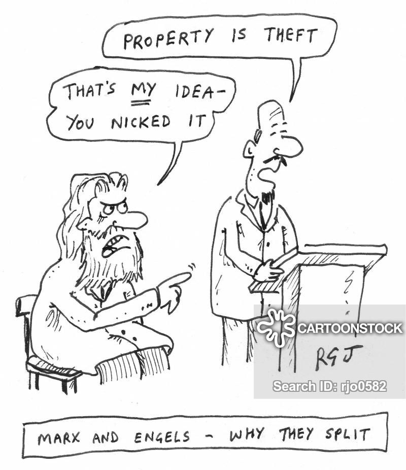

Marxist School
Capitalism is a powerful vehicle for economic progress, but it will collapse, as private property ownership becomes an obstacle to further progress.

The Marxist school of economics emerged from the works of Karl Marx, produced between the 1840s and the 1860s, starting with the publication of The Communist Manifesto in 1848 (co-authored with Friedrich Engels (1820–95), his intellectual partner and financial patron) and culminating in the publication of the first volume of Capital in 1867. It was further developed in Germany and Austria and then in the Soviet Union in the late nineteenth and the early twentieth centuries. More recently, it was elaborated in the US and Europe during the 1960s and the 1970s.
Labour theory of value, classes, and production: The Marxist school as the truer heir of the Classical school
As I mentioned earlier, the Marxist school inherited many elements from the Classical school. In many ways, it is truer to the Classical doctrine than the latter’s self-proclaimed successor, the Neoclassical school. It adopted the labour theory of value, which was explicitly rejected by the Neoclassical school. It also focused on production, whereas consumption and exchange were the keys for the Neoclassical school. It envisioned an economy comprised of classes rather than individuals – another key idea of the Classical school rejected by the Neoclassical school.
The history of all hitherto existing society is the history of class struggles.
Karl Marx
Developing the Classical school, Marx and his followers came up with a type of economics very different from that offered by its half-brother, the Neoclassical school.
Production at the centre of economics
Taking the Classical school’s production-based view of the economy further, the Marxist school argued that ‘production is. . . the basis of social order’, in the words of Engels. Every society is seen as being built on an economic base, or the mode of production. This base is made up of the forces of production (technologies, machines, human skills) and the relations of production (property rights, employment relationship, division of labour). Upon this base is the superstructure, which comprises culture, politics and other aspects of human life, which in turn affect the way the economy is run. In this sense, Marx was probably the first economist to systematically explore the role of institutions in the economy, presaging the Institutionalist school.
Production is the basis of social order.
Friedrich Engels
Further developing Adam Smith’s ‘stages of development’ theory, the Marxist school saw societies as evolving through a series of historical stages, defined in terms of their mode of production: primitive communism (‘tribal’ societies); antiquarian mode of production (based on slavery, as in Greece and Rome); feudalism (based on landlords commanding semi-slaves, or serfs, tied to their lands); capitalism; communism. Capitalism is seen as but one stage of human development before we reach the ultimate stage of communism. This recognition of the historical nature of economic problems is a great contrast to the Neoclassical school, which considers the ‘economic’ problem of utility maximization universal – for Robinson Crusoe in a desert island, for participants in a weekly market of medieval Europe, for subsistence farmers in Tanzania and for an affluent German consumer in the twenty-first century, you name it.

Class struggle and the systemic collapse of capitalism
The Marxist school took the class-based view of society of the Classical school to another level. It viewed class conflicts as the central force of history – summarized in the declaration in The Communist Manifesto: ‘The history of hitherto existing society is the history of class struggles.’ Moreover, the school refused to see the working class as a passive entity, as did the Classical school, and accorded it an active role in history.
Classical economists viewed workers as simple souls unable to even control their biological urges. As soon as the economy expands and the demand for labour grows and higher wages are paid, workers have more children. This means more workers, bringing the wages again down to subsistence level. Only a life of misery lay ahead of them, those economists believed, unless they learned to exercise restraint and stop producing so many children – a highly unlikely prospect, those economists surmised, given their base nature.
Marx had a totally different view. For him, workers were not the powerless ‘huddled mass’ in Classical economics but active agents of social change – the ‘grave digger of capitalism’ in his words – whose organizational skills and discipline were being forged in the harsh hierarchy within factories of ever-growing size and complexity.
Marx did not believe that workers could start a revolution and topple capitalism at will. The time had to be ripe. This would come only when capitalism has developed sufficiently, leading to a heightened contradiction between the technological requirements of the system (forces of production) and its institutional set-up (relations of production).
With the continuous development of technologies, spurred by the need on the part of capitalists to invest and innovate in order to survive the unrelenting competition, the division of labour becomes increasingly more ‘social’, making capitalist firms become more dependent on each other as suppliers and buyers. This makes coordination of activities among those related firms increasingly more necessary, but the persistence of private ownership of the means of production makes such coordination very difficult, if not totally impossible. The result is increasing contradiction in the system, finally leading to its collapse. Capitalism would be replaced by socialism, in which the central planning authority fully coordinates the activities of all the related enterprises, now collectively owned by all workers.
Fatally flawed, but still useful: theories of the firm, work, and technological progress
The Marxist school has many fatal flaws. Above all, its prediction that capitalism will collapse under its own weight has not come true. Capitalism has proved far more capable of reforming itself than the school had predicted. Insofar as socialism emerged, it did so in countries like Russia and China, where capitalism was hardly developed, rather than in the most advanced capitalist economies, as Marx had predicted. Because it was so intertwined with a political project, along the way, many of its followers developed blind faith in whatever Marx said or, even worse, what the Soviet Union said was the right interpretation of his ideas. The collapse of the socialist bloc has revealed that the Marxist theory of how the alternative to capitalism should be organized was highly inadequate. The list goes on.
Despite these limitations, the Marxist school still offers some very useful insights into the workings of capitalism.
Marx was the first economist to pay attention to the differences between the two key institutions of capitalism – the hierarchical, planned order of the firm and the (formally) free, spontaneous order of the market. He described capitalist firms as islands of rational planning in an anarchic sea of the market. Moreover, he foresaw that large-scale enterprises owned by multitudes of shareholders with limited liability – which were called ‘joint stock companies’ in his time – would become the leading actors of capitalism, at a time when most free-market economists were still against the very idea of limited liability.
Unlike most other economists, Marx and some of his followers have paid attention to work for its own sake, rather than as a disutility that people have to put up with in order to earn money to pay for their consumption. He believed that work can allow human beings to express their inherent creativity. He criticized the hierarchical capitalist firm for blocking such possibility. He emphasized the dehumanizing and mind-numbing effects of the repetitive work that emanates from increasingly fine divisions of labour. It is interesting to note that, while praising the positive productivity effects of finer divisions of labour, Adam Smith had also worried about the negative impact of fragmented work on individual workers.
Last but not least, Marx was also the first major economist who truly understood the importance of technological innovation in the process of capitalist development, making it the central element in his theory.